2022 Higher Chemistry - Paper 2 questions
Source: Scottish Qualifications Authority (SQA) / Qualifications Scotland. This is a StemInteract HTML companion, not an official HTML edition. Selectable text is supplied alongside original page images. Use the images or original PDF for equations, powers, fractions, vector notation, tables and diagrams; text extraction cannot fully preserve mathematical layout.
Jump to a question
PDF page 1
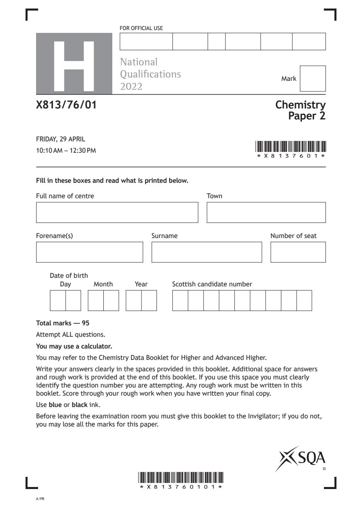
Selectable page text
FOR OFFICIAL USE
H
National
Qualications
Mark
2022
X813/76/01 Chemistry
Paper 2
FRIDAY, 29 APRIL
10:10 AM – 12:30 PM
*X8137601*
Fill in these boxes and read what is printed below.
Full name of centre Town
Forename(s) Surname Number of seat
Date of birth
Day Month Year Scottish candidate number
Total marks — 95
Attempt ALL questions.
You may use a calculator.
You may refer to the Chemistry Data Booklet for Higher and Advanced Higher.
Write your answers clearly in the spaces provided in this booklet. Additional space for answers
and rough work is provided at the end of this booklet. If you use this space you must clearly
identify the question number you are attempting. Any rough work must be written in this
booklet. Score through your rough work when you have written your final copy.
Use blue or black ink.
Before leaving the examination room you must give this booklet to the Invigilator; if you do not,
you may lose all the marks for this paper.
©
*X813760101*
A/PBPDF page 2
Paper 2, Question 1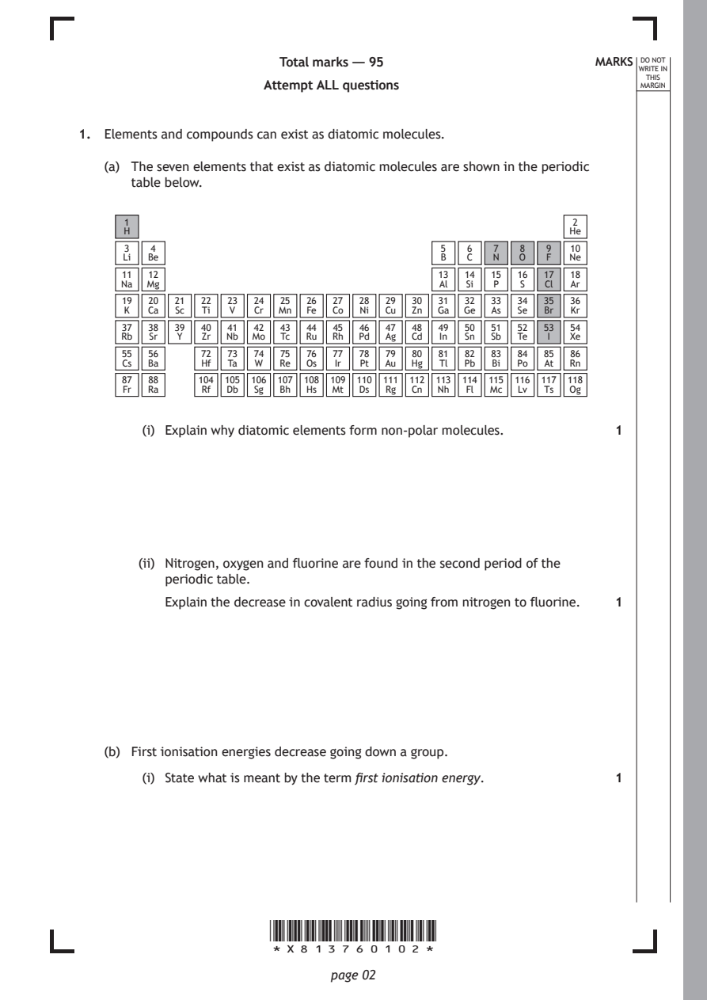
Selectable page text
Total marks — 95 MARKS _{W}^{D}_{R}^{O}_{I} _{T}^{N}OT
E IN
THIS
Attempt ALL questions MARGIN
1. Elements and compounds can exist as diatomic molecules.
(a) The seven elements that exist as diatomic molecules are shown in the periodic
table below.
1 2
H He
3 4 5 6 7 8 9 10
Li Be B C N O F Ne
11 12 13 14 15 16 17 18
Na Mg Al Si P S Cl Ar
19 20 21 22 23 24 25 26 27 28 29 30 31 32 33 34 35 36
K Ca Sc Ti V Cr Mn Fe Co Ni Cu Zn Ga Ge As Se Br Kr
37 38 39 40 41 42 43 44 45 46 47 48 49 50 51 52 53 54
Rb Sr Y Zr Nb Mo Tc Ru Rh Pd Ag Cd In Sn Sb Te I Xe
55 56 72 73 74 75 76 77 78 79 80 81 82 83 84 85 86
Cs Ba Hf Ta W Re Os Ir Pt Au Hg Tl Pb Bi Po At Rn
87 88 104 105 106 107 108 109 110 111 112 113 114 115 116 117 118
Fr Ra Rf Db Sg Bh Hs Mt Ds Rg Cn Nh Fl Mc Lv Ts Og
(i) Explain why diatomic elements form non-polar molecules. 1
(ii) Nitrogen, oxygen and fluorine are found in the second period of the
periodic table.
Explain the decrease in covalent radius going from nitrogen to fluorine. 1
(b) First ionisation energies decrease going down a group.
(i) State what is meant by the term first ionisation energy. 1
*X813760102*
page 02PDF page 3
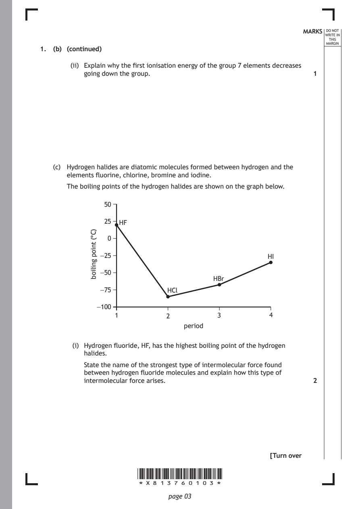
Selectable page text
MARKS _{W}^{D}_{R}^{O}_{I} _{T}^{N}OT
E IN
THIS
MARGIN
1. (b) (continued)
(ii) Explain why the first ionisation energy of the group 7 elements decreases
going down the group.
(c) Hydrogen halides are diatomic molecules formed between hydrogen and the
elements fluorine, chlorine, bromine and iodine.
The boiling points of the hydrogen halides are shown on the graph below.
50
25 HF
0
−25 HI
−50
HBr
−75 HCl
−100
1 2 3 4
*X813760103*
page 03
)C°(
tniop
gniliob
1
period
(i) Hydrogen fluoride, HF, has the highest boiling point of the hydrogen
halides.
State the name of the strongest type of intermolecular force found
between hydrogen fluoride molecules and explain how this type of
intermolecular force arises. 2
[Turn overPDF page 4
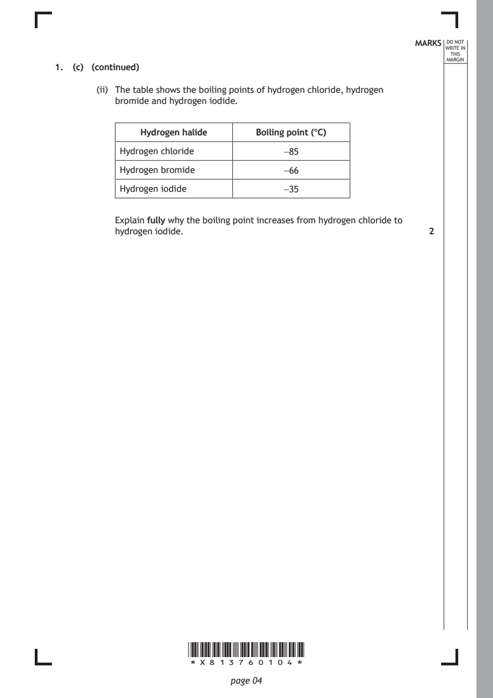
Selectable page text
MARKS _{W}^{D}_{R}^{O}_{I} _{T}^{N}OT
E IN
THIS
MARGIN
1. (c) (continued)
(ii) The table shows the boiling points of hydrogen chloride, hydrogen
bromide and hydrogen iodide.
Hydrogen halide Boiling point (°C)
Hydrogen chloride −85
Hydrogen bromide −66
Hydrogen iodide −35
Explain fully why the boiling point increases from hydrogen chloride to
hydrogen iodide. 2
*X813760104*
page 04PDF page 5
Paper 2, Question 2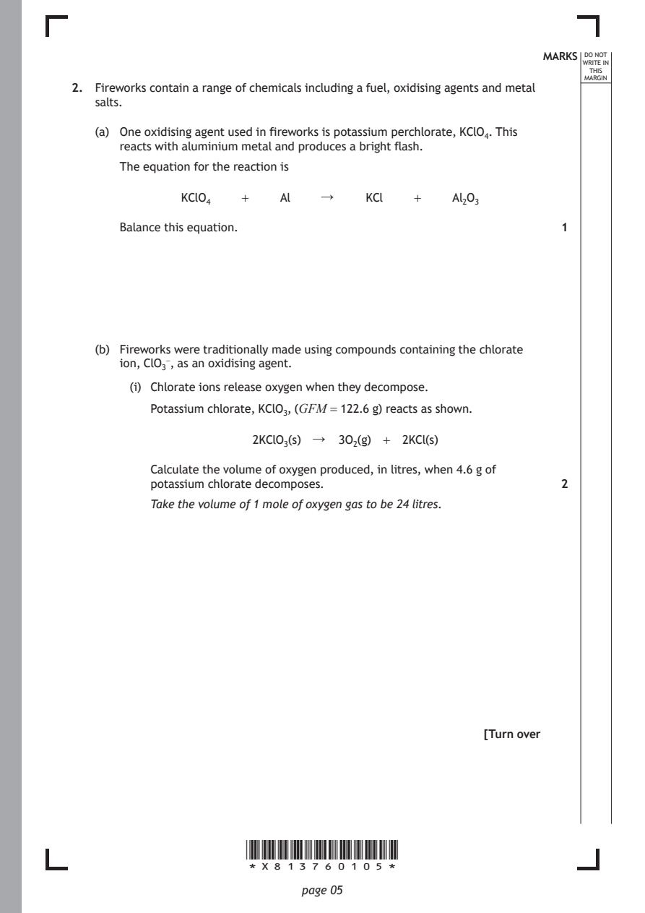
Selectable page text
MARKS _{W}^{D}_{R}^{O}_{I} _{T}^{N}OT
E IN
THIS
MARGIN
2. Fireworks contain a range of chemicals including a fuel, oxidising agents and metal
salts.
(a) One oxidising agent used in fireworks is potassium perchlorate, KClO₄. This
reacts with aluminium metal and produces a bright flash.
The equation for the reaction is
KClO₄ + Al ↓ KCl + Al₂O₃
Balance this equation. 1
(b) Fireworks were traditionally made using compounds containing the chlorate
ion, ClO₃⁻, as an oxidising agent.
(i) Chlorate ions release oxygen when they decompose.
Potassium chlorate, KClO₃, (GFM = 122.6 g) reacts as shown.
2KClO₃(s) ↓ 3O₂(g) + 2KCl(s)
Calculate the volume of oxygen produced, in litres, when 4.6 g of
potassium chlorate decomposes. 2
Take the volume of 1 mole of oxygen gas to be 24 litres.
[Turn over
*X813760105*
page 05PDF page 6
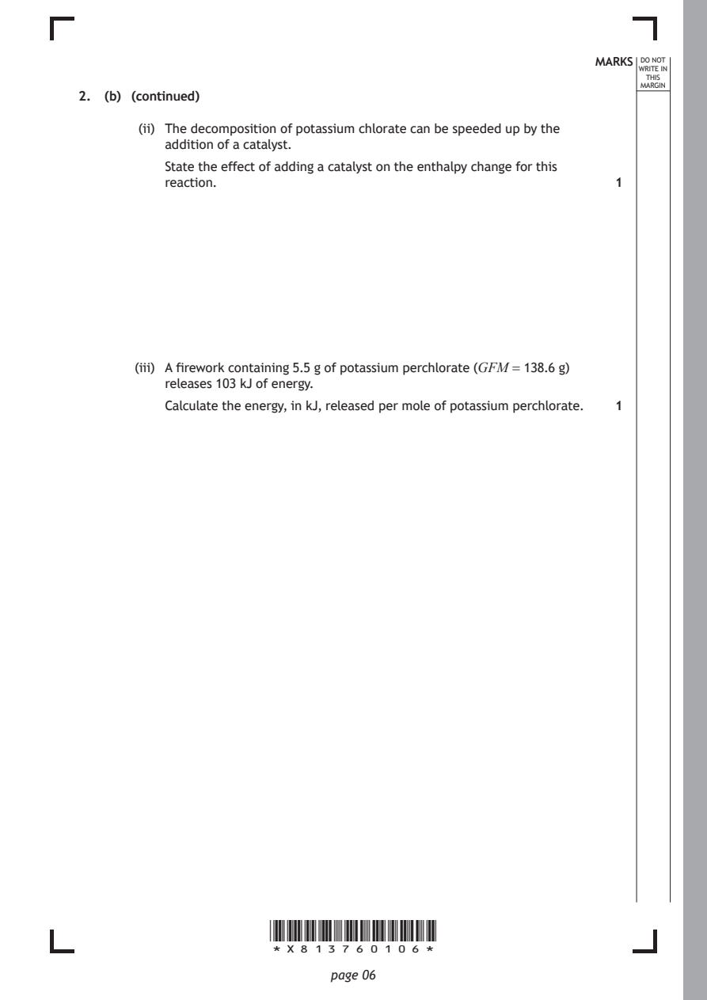
Selectable page text
MARKS _{W}^{D}_{R}^{O}_{I} _{T}^{N}OT
E IN
THIS
MARGIN
2. (b) (continued)
(ii) The decomposition of potassium chlorate can be speeded up by the
addition of a catalyst.
State the effect of adding a catalyst on the enthalpy change for this
reaction. 1
(iii) A firework containing 5.5 g of potassium perchlorate (GFM = 138.6 g)
releases 103 kJ of energy.
Calculate the energy, in kJ, released per mole of potassium perchlorate. 1
*X813760106*
page 06PDF page 7
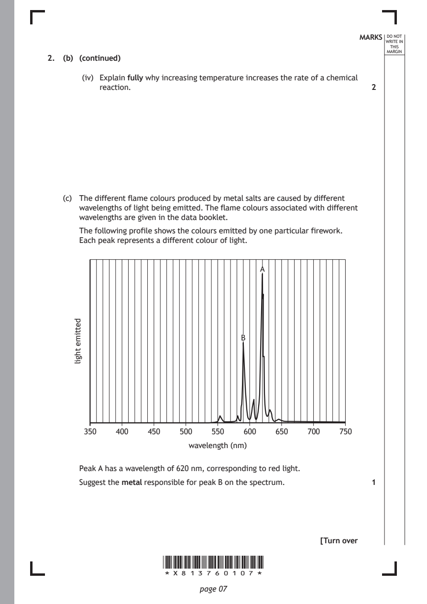
Selectable page text
MARKS _{W}^{D}_{R}^{O}_{I} _{T}^{N}OT
E IN
THIS
MARGIN
2. (b) (continued)
(iv) Explain fully why increasing temperature increases the rate of a chemical
reaction.
(c) The different flame colours produced by metal salts are caused by different
wavelengths of light being emitted. The flame colours associated with different
wavelengths are given in the data booklet.
The following profile shows the colours emitted by one particular firework.
Each peak represents a different colour of light.
A
B
350 400 450 500 550 600 650 700 750
*X813760107*
page 07
dettime
thgil
2
wavelength (nm)
Peak A has a wavelength of 620 nm, corresponding to red light.
Suggest the metal responsible for peak B on the spectrum. 1
[Turn overPDF page 8
Paper 2, Question 3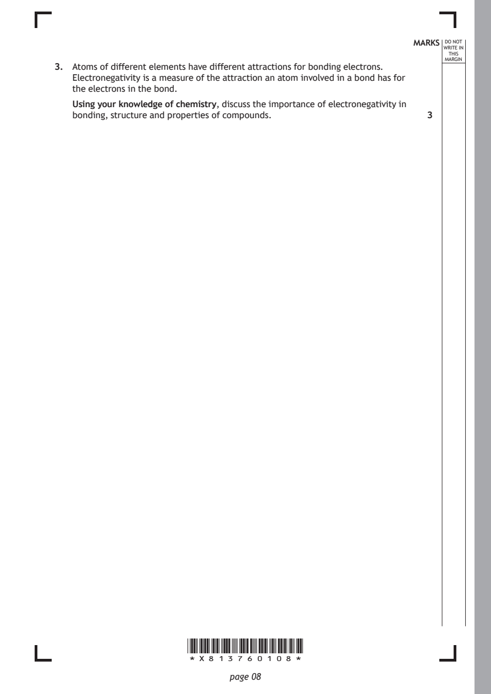
Selectable page text
MARKS _{W}^{D}_{R}^{O}_{I} _{T}^{N}OT
E IN
THIS
MARGIN
3. Atoms of different elements have different attractions for bonding electrons.
Electronegativity is a measure of the attraction an atom involved in a bond has for
the electrons in the bond.
Using your knowledge of chemistry, discuss the importance of electronegativity in
bonding, structure and properties of compounds. 3
*X813760108*
page 08PDF page 9
Paper 2, Question 4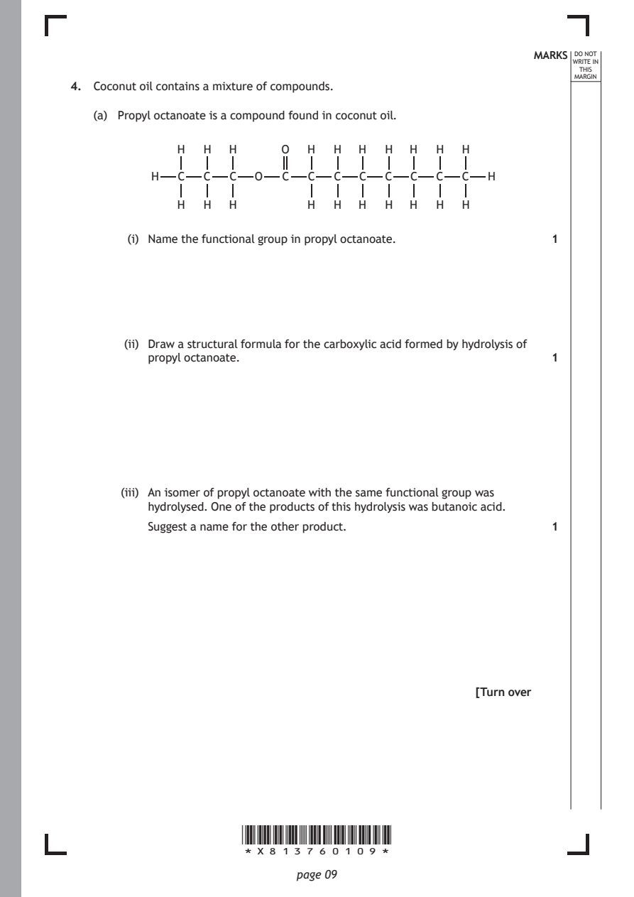
Selectable page text
MARKS _{W}^{D}_{R}^{O}_{I} _{T}^{N}OT
E IN
THIS
MARGIN
4. Coconut oil contains a mixture of compounds.
(a) Propyl octanoate is a compound found in coconut oil.
H H H O H H H H H H H
H C C C O C C C C C C C C H
H H H H H H H H H H
(i) Name the functional group in propyl octanoate. 1
(ii) Draw a structural formula for the carboxylic acid formed by hydrolysis of
propyl octanoate. 1
(iii) An isomer of propyl octanoate with the same functional group was
hydrolysed. One of the products of this hydrolysis was butanoic acid.
Suggest a name for the other product. 1
[Turn over
*X813760109*
page 09PDF page 10
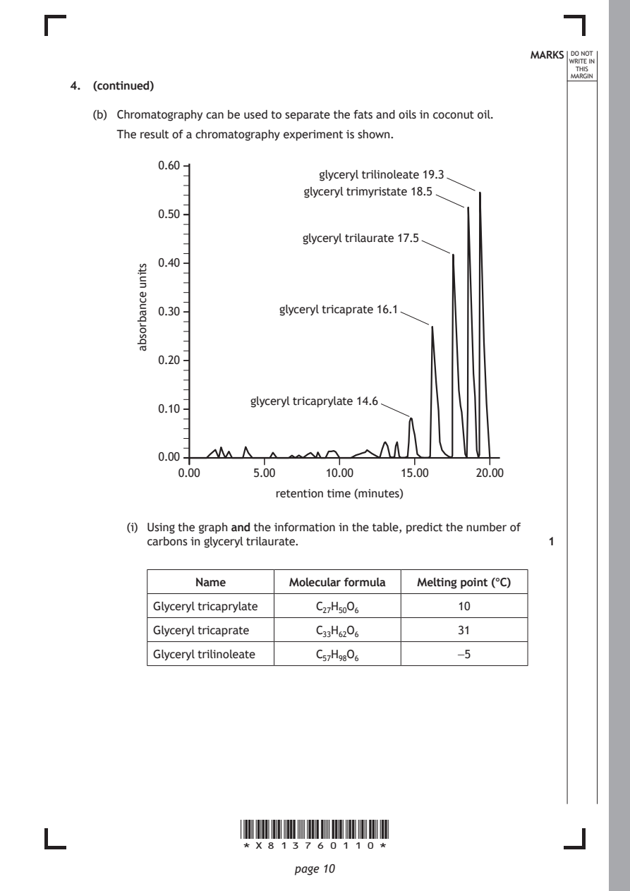
Selectable page text
MARKS _{W}^{D}_{R}^{O}_{I} _{T}^{N}OT
E IN
THIS
MARGIN
4. (continued)
(b) Chromatography can be used to separate the fats and oils in coconut oil.
The result of a chromatography experiment is shown.
0.60
0.50
0.40
0.30
0.20
0.10
0.00
0.00 5.00 10.00 15.00 20.00
retention time (minutes)
*X813760110*
page 10
stinu
ecnabrosba
glyceryl trilinoleate 19.3
glyceryl trimyristate 18.5
glyceryl trilaurate 17.5
glyceryl tricaprate 16.1
glyceryl tricaprylate 14.6
(i) Using the graph and the information in the table, predict the number of
carbons in glyceryl trilaurate. 1
Name Molecular formula Melting point (°C)
Glyceryl tricaprylate C₂₇H₅₀O₆ 10
Glyceryl tricaprate C₃₃H₆₂O₆ 31
Glyceryl trilinoleate C₅₇H₉₈O₆ −5PDF page 11
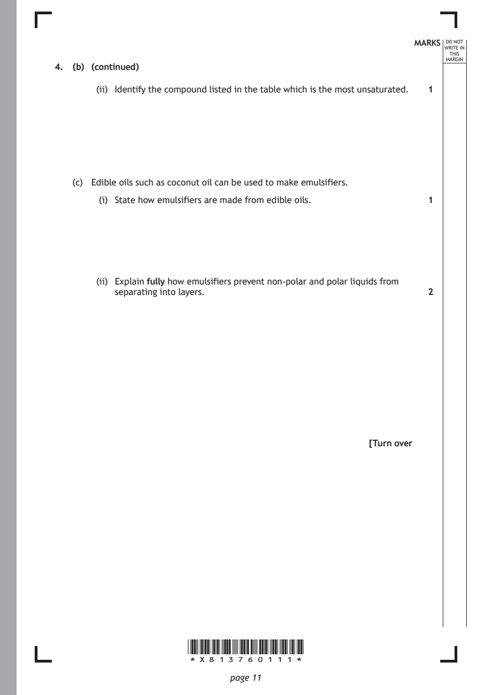
Selectable page text
MARKS _{W}^{D}_{R}^{O}_{I} _{T}^{N}OT
E IN
THIS
MARGIN
4. (b) (continued)
(ii) Identify the compound listed in the table which is the most unsaturated. 1
(c) Edible oils such as coconut oil can be used to make emulsifiers.
(i) State how emulsifiers are made from edible oils. 1
(ii) Explain fully how emulsifiers prevent non-polar and polar liquids from
separating into layers. 2
[Turn over
*X813760111*
page 11PDF page 12
Paper 2, Question 5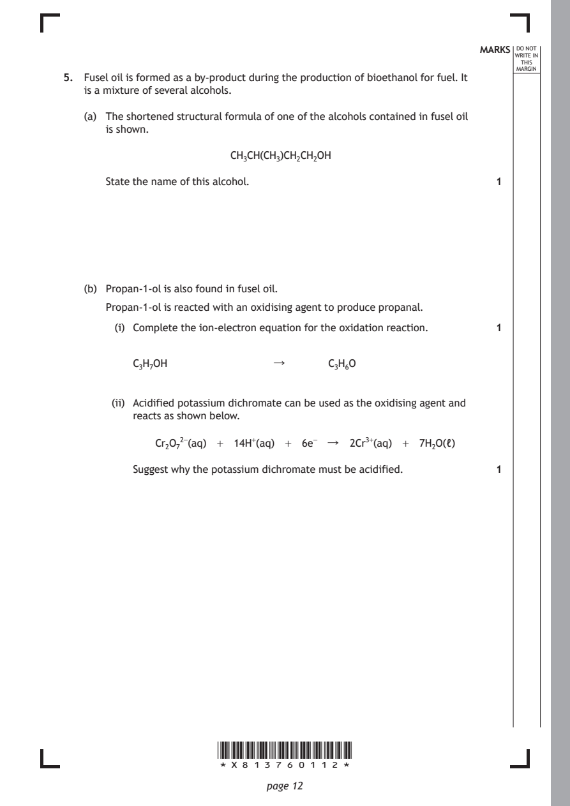
Selectable page text
MARKS _{W}^{D}_{R}^{O}_{I} _{T}^{N}OT
E IN
THIS
MARGIN
5. Fusel oil is formed as a by-product during the production of bioethanol for fuel. It
is a mixture of several alcohols.
(a) The shortened structural formula of one of the alcohols contained in fusel oil
is shown.
CH₃CH(CH₃)CH₂CH₂OH
State the name of this alcohol. 1
(b) Propan-1-ol is also found in fusel oil.
Propan-1-ol is reacted with an oxidising agent to produce propanal.
(i) Complete the ion-electron equation for the oxidation reaction. 1
C₃H₇OH ↓ C₃H₆O
(ii) Acidified potassium dichromate can be used as the oxidising agent and
reacts as shown below.
Cr₂O₇²⁻(aq) + 14H⁺(aq) + 6e⁻ ↓ 2Cr³⁺(aq) + 7H₂O(ℓ)
Suggest why the potassium dichromate must be acidified. 1
*X813760112*
page 12PDF page 13
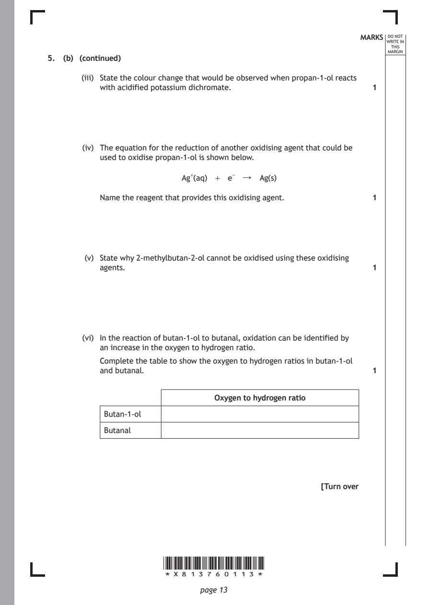
Selectable page text
MARKS _{W}^{D}_{R}^{O}_{I} _{T}^{N}OT
E IN
THIS
MARGIN
5. (b) (continued)
(iii) State the colour change that would be observed when propan-1-ol reacts
with acidified potassium dichromate. 1
(iv) The equation for the reduction of another oxidising agent that could be
used to oxidise propan-1-ol is shown below.
Ag⁺(aq) + e⁻ ↓ Ag(s)
Name the reagent that provides this oxidising agent. 1
(v) State why 2-methylbutan-2-ol cannot be oxidised using these oxidising
agents. 1
(vi) In the reaction of butan-1-ol to butanal, oxidation can be identified by
an increase in the oxygen to hydrogen ratio.
Complete the table to show the oxygen to hydrogen ratios in butan-1-ol
and butanal. 1
Oxygen to hydrogen ratio
Butan-1-ol
Butanal
[Turn over
*X813760113*
page 13PDF page 14
Paper 2, Question 6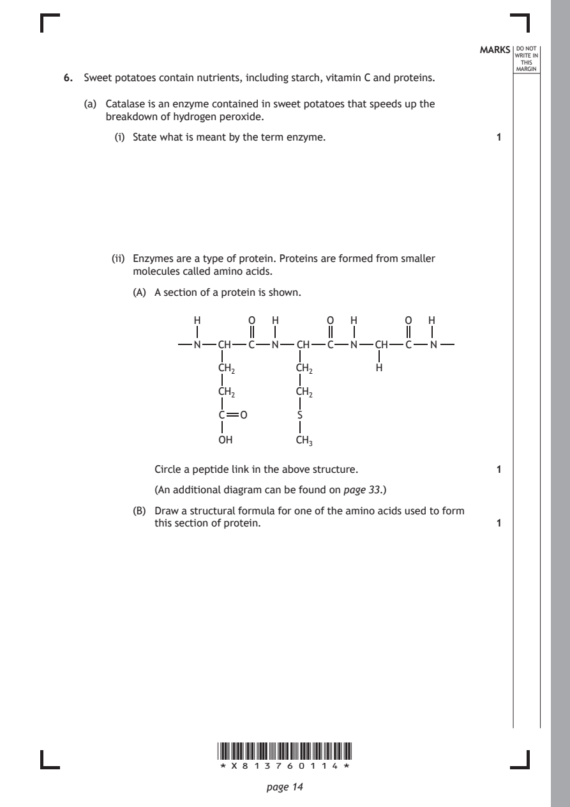
Selectable page text
MARKS _{W}^{D}_{R}^{O}_{I} _{T}^{N}OT
E IN
THIS
MARGIN
6. Sweet potatoes contain nutrients, including starch, vitamin C and proteins.
(a) Catalase is an enzyme contained in sweet potatoes that speeds up the
breakdown of hydrogen peroxide.
(i) State what is meant by the term enzyme. 1
(ii) Enzymes are a type of protein. Proteins are formed from smaller
molecules called amino acids.
(A) A section of a protein is shown.
H O H O H O H
N CH C N CH C N CH C N
CH₂ CH₂ H
CH₂ CH₂
C O S
OH CH₃
Circle a peptide link in the above structure. 1
(An additional diagram can be found on page 33.)
(B) Draw a structural formula for one of the amino acids used to form
this section of protein. 1
*X813760114*
page 14PDF page 15
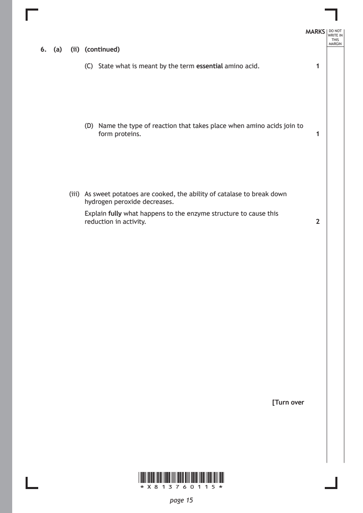
Selectable page text
MARKS _{W}^{D}_{R}^{O}_{I} _{T}^{N}OT
E IN
THIS
MARGIN
6. (a) (ii) (continued)
(C) State what is meant by the term essential amino acid. 1
(D) Name the type of reaction that takes place when amino acids join to
form proteins. 1
(iii) As sweet potatoes are cooked, the ability of catalase to break down
hydrogen peroxide decreases.
Explain fully what happens to the enzyme structure to cause this
reduction in activity. 2
[Turn over
*X813760115*
page 15PDF page 16
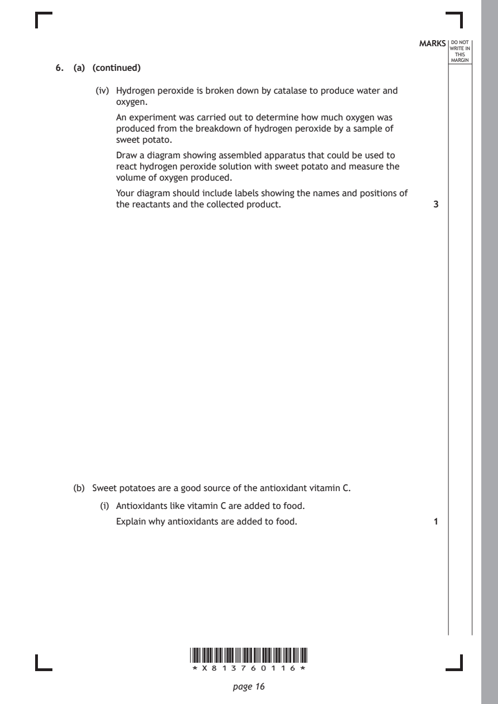
Selectable page text
MARKS _{W}^{D}_{R}^{O}_{I} _{T}^{N}OT
E IN
THIS
MARGIN
6. (a) (continued)
(iv) Hydrogen peroxide is broken down by catalase to produce water and
oxygen.
An experiment was carried out to determine how much oxygen was
produced from the breakdown of hydrogen peroxide by a sample of
sweet potato.
Draw a diagram showing assembled apparatus that could be used to
react hydrogen peroxide solution with sweet potato and measure the
volume of oxygen produced.
Your diagram should include labels showing the names and positions of
the reactants and the collected product. 3
(b) Sweet potatoes are a good source of the antioxidant vitamin C.
(i) Antioxidants like vitamin C are added to food.
Explain why antioxidants are added to food. 1
*X813760116*
page 16PDF page 17
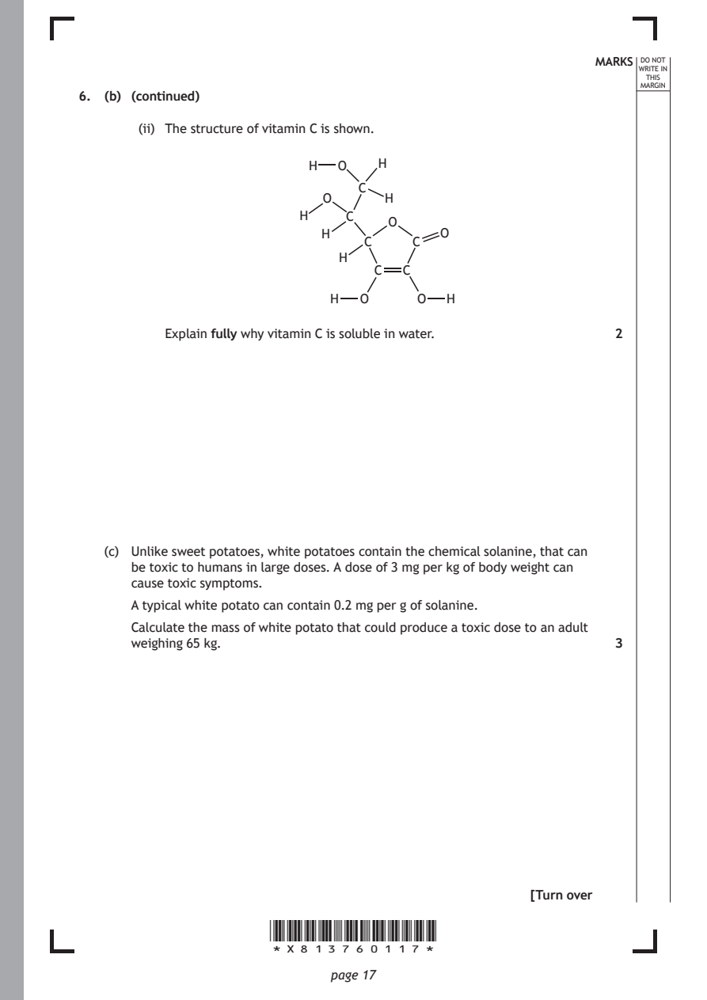
Selectable page text
MARKS _{W}^{D}_{R}^{O}_{I} _{T}^{N}OT
E IN
THIS
MARGIN
6. (b) (continued)
(ii) The structure of vitamin C is shown.
H O H
C
O H
H C
O
H O
C C
H
C C
H O O H
Explain fully why vitamin C is soluble in water. 2
(c) Unlike sweet potatoes, white potatoes contain the chemical solanine, that can
be toxic to humans in large doses. A dose of 3 mg per kg of body weight can
cause toxic symptoms.
A typical white potato can contain 0.2 mg per g of solanine.
Calculate the mass of white potato that could produce a toxic dose to an adult
weighing 65 kg. 3
[Turn over
*X813760117*
page 17PDF page 18
Paper 2, Question 7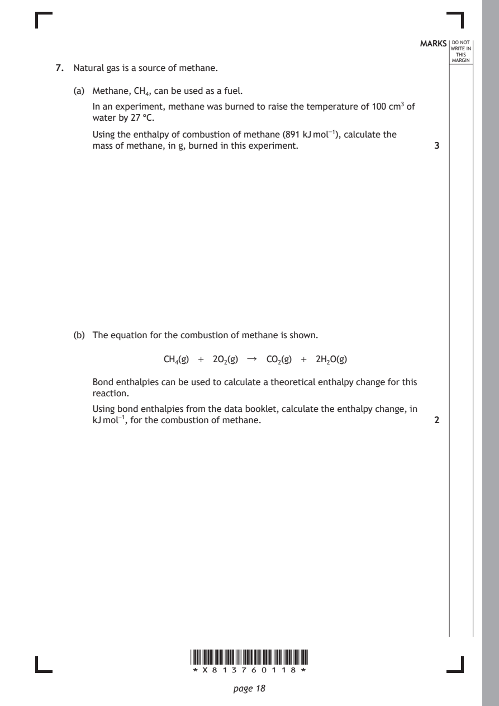
Selectable page text
MARKS _{W}^{D}_{R}^{O}_{I} _{T}^{N}OT
E IN
THIS
MARGIN
7. Natural gas is a source of methane.
(a) Methane, CH₄, can be used as a fuel.
In an experiment, methane was burned to raise the temperature of 100 cm³ of
water by 27 °C.
Using the enthalpy of combustion of methane (891 kJ mol⁻¹), calculate the
mass of methane, in g, burned in this experiment. 3
(b) The equation for the combustion of methane is shown.
CH₄(g) + 2O₂(g) ↓ CO₂(g) + 2H₂O(g)
Bond enthalpies can be used to calculate a theoretical enthalpy change for this
reaction.
Using bond enthalpies from the data booklet, calculate the enthalpy change, in
kJ mol⁻¹, for the combustion of methane. 2
*X813760118*
page 18PDF page 19
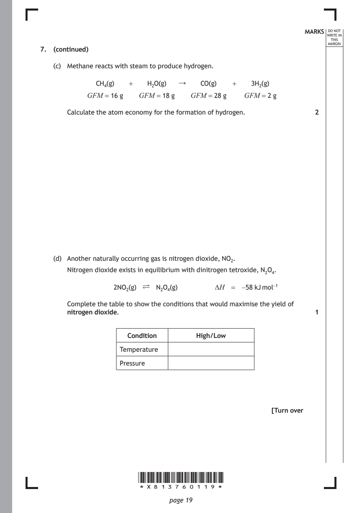
Selectable page text
MARKS _{W}^{D}_{R}^{O}_{I} _{T}^{N}OT
E IN
THIS
MARGIN
7. (continued)
(c) Methane reacts with steam to produce hydrogen.
CH₄(g) + H₂O(g) ↓ CO(g) + 3H₂(g)
GFM = 16 g GFM = 18 g GFM = 28 g GFM = 2 g
Calculate the atom economy for the formation of hydrogen. 2
(d) Another naturally occurring gas is nitrogen dioxide, NO₂.
Nitrogen dioxide exists in equilibrium with dinitrogen tetroxide, N₂O₄.
2NO₂(g) ∏ N₂O₄(g) ∆H = −58 kJ mol⁻¹
Complete the table to show the conditions that would maximise the yield of
nitrogen dioxide. 1
Condition High/Low
Temperature
Pressure
[Turn over
*X813760119*
page 19PDF page 20
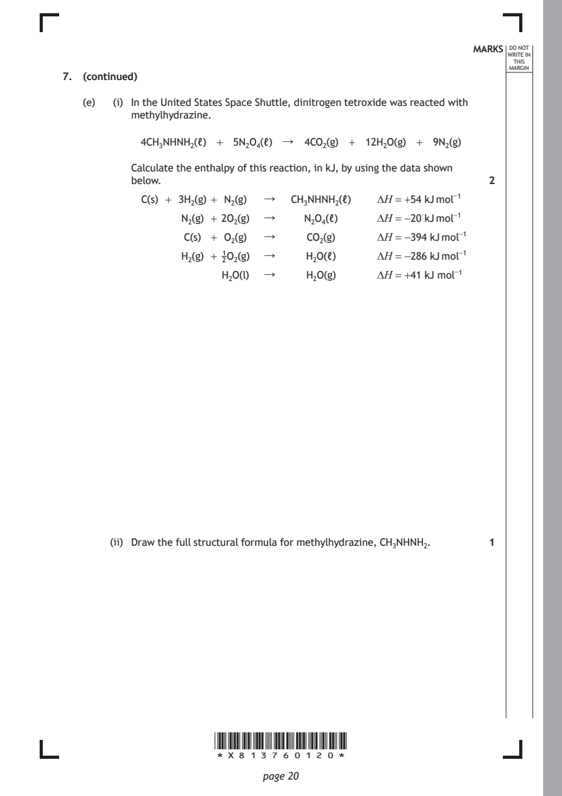
Selectable page text
MARKS _{W}^{D}_{R}^{O}_{I} _{T}^{N}OT
E IN
THIS
MARGIN
7. (continued)
(e) (i) In the United States Space Shuttle, dinitrogen tetroxide was reacted with
methylhydrazine.
4CH₃NHNH₂(ℓ) + 5N₂O₄(ℓ) ↓ 4CO₂(g) + 12H₂O(g) + 9N₂(g)
Calculate the enthalpy of this reaction, in kJ, by using the data shown
below. 2
C(s) + 3H₂(g) + N₂(g) ↓ CH₃NHNH₂(ℓ) ∆H = +54 kJ mol⁻¹
N₂(g) + 2O₂(g) ↓ N₂O₄(ℓ) ∆H = −20 kJ mol⁻¹
C(s) + O₂(g) ↓ CO₂(g) ∆H = −394 kJ mol⁻¹
Η₂(g) + 1Ο₂(g) ↓ Η₂Ο(ℓ) ∆H = −286 kJ mol⁻¹
2
H₂O(l) ↓ H₂O(g) ∆H = +41 kJ mol⁻¹
(ii) Draw the full structural formula for methylhydrazine, CH₃NHNH₂. 1
*X813760120*
page 20PDF page 21
Paper 2, Question 8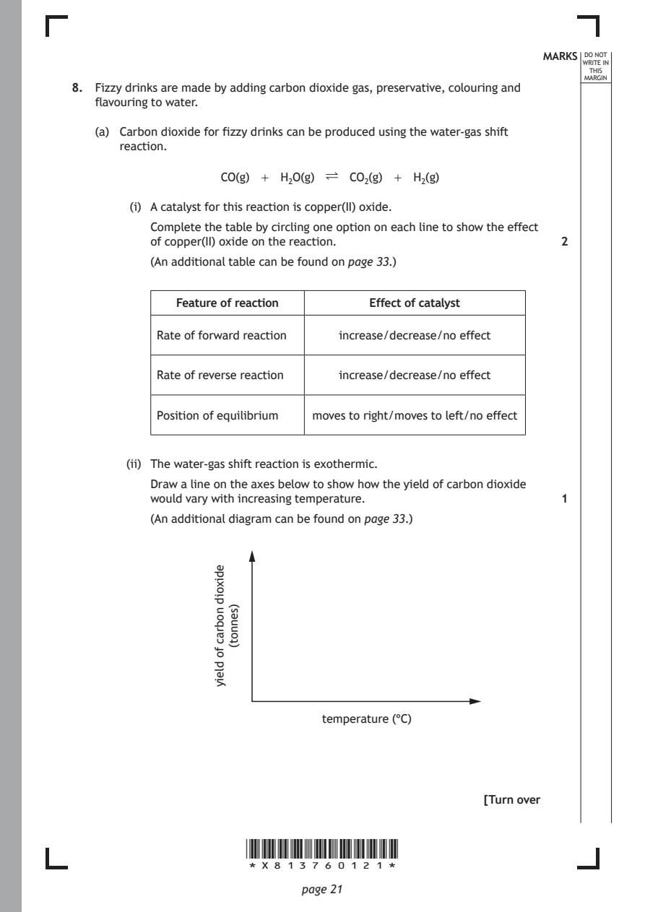
Selectable page text
MARKS _{W}^{D}_{R}^{O}_{I} _{T}^{N}OT
E IN
THIS
MARGIN
8. Fizzy drinks are made by adding carbon dioxide gas, preservative, colouring and
flavouring to water.
(a) Carbon dioxide for fizzy drinks can be produced using the water-gas shift
reaction.
CO(g) + H₂O(g) ∏ CO₂(g) + H₂(g)
(i) A catalyst for this reaction is copper(II) oxide.
Complete the table by circling one option on each line to show the effect
of copper(II) oxide on the reaction.
(An additional table can be found on page 33.)
Feature of reaction Effect of catalyst
Rate of forward reaction increase/decrease/no effect
Rate of reverse reaction increase/decrease/no effect
Position of equilibrium moves to right/moves to left/no effect
(ii) The water-gas shift reaction is exothermic.
Draw a line on the axes below to show how the yield of carbon dioxide
would vary with increasing temperature.
(An additional diagram can be found on page 33.)
*X813760121*
page 21
edixoid
nobrac
fo
dleiy
)sennot(
2
1
temperature (°C)
[Turn overPDF page 22
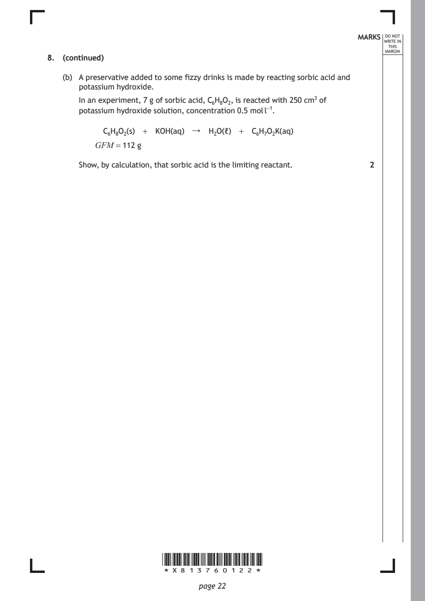
Selectable page text
MARKS _{W}^{D}_{R}^{O}_{I} _{T}^{N}OT
E IN
THIS
MARGIN
8. (continued)
(b) A preservative added to some fizzy drinks is made by reacting sorbic acid and
potassium hydroxide.
In an experiment, 7 g of sorbic acid, C₆H₈O₂, is reacted with 250 cm³ of
potassium hydroxide solution, concentration 0.5 mol l⁻¹.
C₆H₈O₂(s) + KOH(aq) ↓ H₂O(ℓ) + C₆H₇O₂K(aq)
GFM = 112 g
Show, by calculation, that sorbic acid is the limiting reactant. 2
*X813760122*
page 22PDF page 23
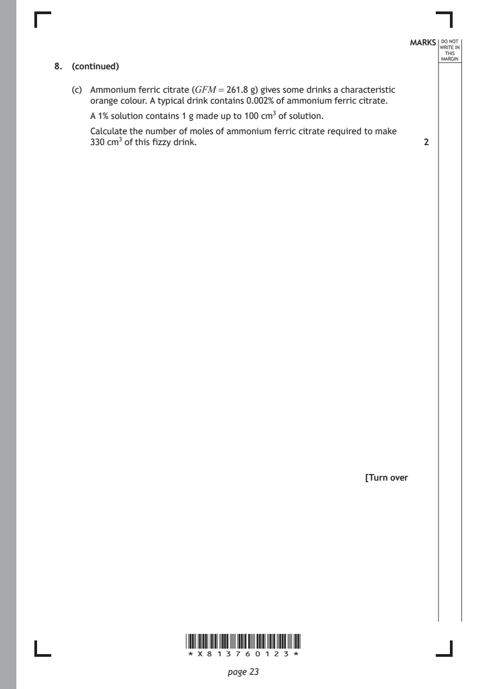
Selectable page text
MARKS _{W}^{D}_{R}^{O}_{I} _{T}^{N}OT
E IN
THIS
MARGIN
8. (continued)
(c) Ammonium ferric citrate (GFM = 261.8 g) gives some drinks a characteristic
orange colour. A typical drink contains 0.002% of ammonium ferric citrate.
A 1% solution contains 1 g made up to 100 cm³ of solution.
Calculate the number of moles of ammonium ferric citrate required to make
330 cm³ of this fizzy drink. 2
[Turn over
*X813760123*
page 23PDF page 24
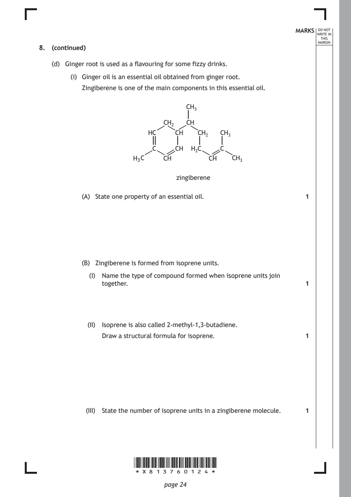
Selectable page text
MARKS _{W}^{D}_{R}^{O}_{I} _{T}^{N}OT
E IN
THIS
MARGIN
8. (continued)
(d) Ginger root is used as a flavouring for some fizzy drinks.
(i) Ginger oil is an essential oil obtained from ginger root.
Zingiberene is one of the main components in this essential oil.
CH₃
CH₂ CH
HC CH CH₂ CH₃
C CH H₂C C
H₃C CH CH CH₃
zingiberene
(A) State one property of an essential oil. 1
(B) Zingiberene is formed from isoprene units.
(I) Name the type of compound formed when isoprene units join
together. 1
(II) Isoprene is also called 2-methyl-1,3-butadiene.
Draw a structural formula for isoprene. 1
(III) State the number of isoprene units in a zingiberene molecule. 1
*X813760124*
page 24PDF page 25
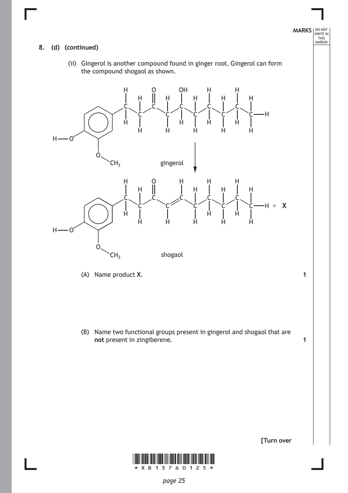
Selectable page text
MARKS _{W}^{D}_{R}^{O}_{I} _{T}^{N}OT
E IN
THIS
MARGIN
8. (d) (continued)
(ii) Gingerol is another compound found in ginger root. Gingerol can form
the compound shogaol as shown.
H O OH H H
H H H H H
C C C C C
C C C C C H
H H H H
H H H H H
H O
O
CH₃ gingerol
H O H H H
H H H H
C C C C C
C C C C C H + X
H H H
H H H H H
H O
O
CH₃ shogaol
(A) Name product X. 1
(B) Name two functional groups present in gingerol and shogaol that are
not present in zingiberene. 1
[Turn over
*X813760125*
page 25PDF page 26
Paper 2, Question 9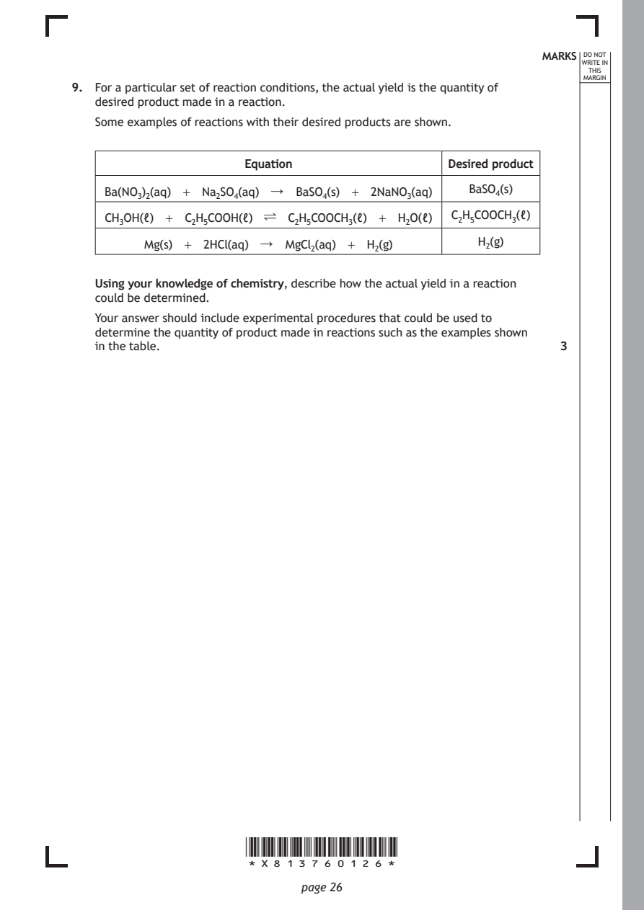
Selectable page text
MARKS _{W}^{D}_{R}^{O}_{I} _{T}^{N}OT
E IN
THIS
MARGIN
9. For a particular set of reaction conditions, the actual yield is the quantity of
desired product made in a reaction.
Some examples of reactions with their desired products are shown.
Equation Desired product
Ba(NO₃)₂(aq) + Na₂SO₄(aq) ↓ BaSO₄(s) + 2NaNO₃(aq) BaSO₄(s)
CH₃OH(ℓ) + C₂H₅COOH(ℓ) ∏ C₂H₅COOCH₃(ℓ) + H₂O(ℓ) C₂H₅COOCH₃(ℓ)
Μg(s) + 2ΗCl(aq) ↓ MgCl₂(aq) + Η₂(g) H₂(g)
Using your knowledge of chemistry, describe how the actual yield in a reaction
could be determined.
Your answer should include experimental procedures that could be used to
determine the quantity of product made in reactions such as the examples shown
in the table. 3
*X813760126*
page 26PDF page 27
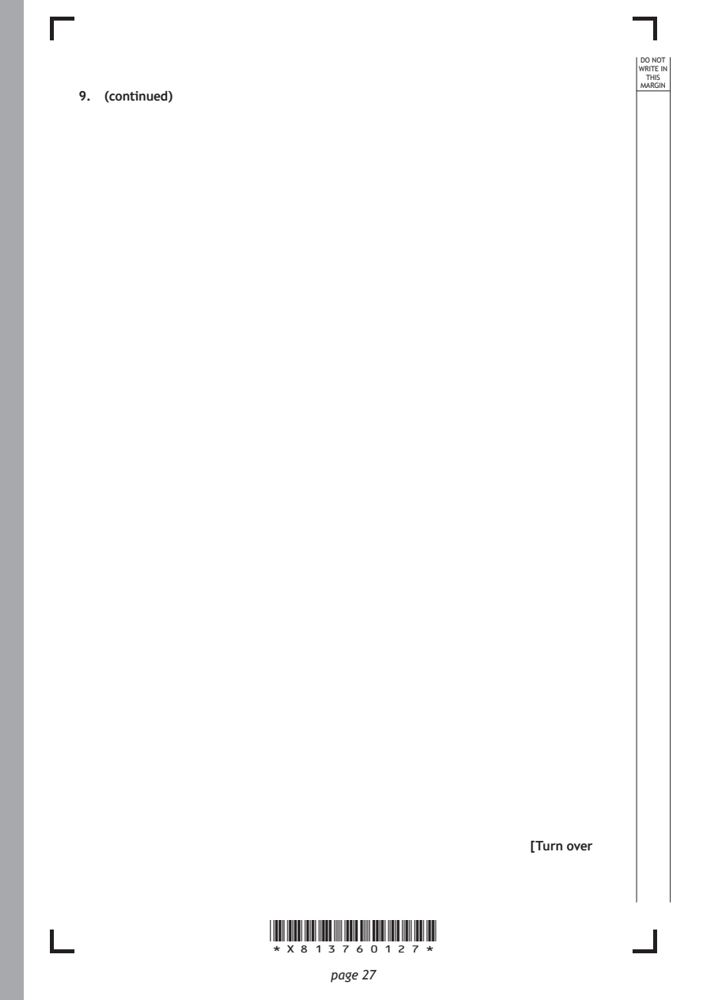
Selectable page text
DO NOT
WRITE IN
THIS
MARGIN
9. (continued)
[Turn over
*X813760127*
page 27PDF page 28
Paper 2, Question 10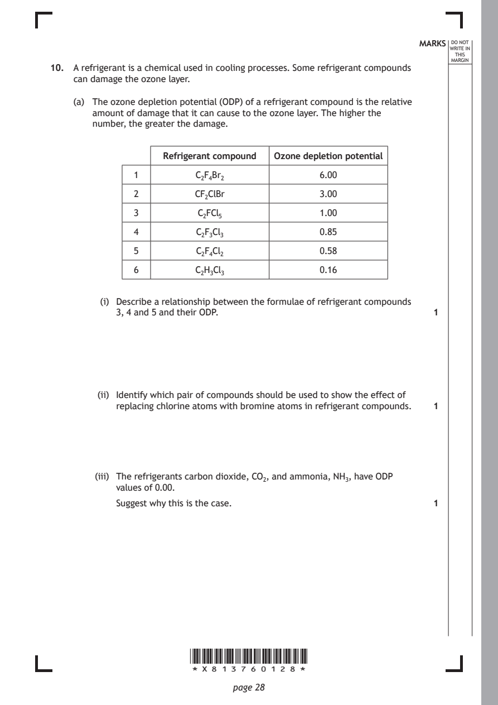
Selectable page text
MARKS _{W}^{D}_{R}^{O}_{I} _{T}^{N}OT
E IN
THIS
MARGIN
10. A refrigerant is a chemical used in cooling processes. Some refrigerant compounds
can damage the ozone layer.
(a) The ozone depletion potential (ODP) of a refrigerant compound is the relative
amount of damage that it can cause to the ozone layer. The higher the
number, the greater the damage.
Refrigerant compound Ozone depletion potential
1 C₂F₄Br₂ 6.00
2 CF₂ClBr 3.00
3 C₂FCl₅ 1.00
4 C₂F₃Cl₃ 0.85
5 C₂F₄Cl₂ 0.58
6 C₂H₃Cl₃ 0.16
(i) Describe a relationship between the formulae of refrigerant compounds
3, 4 and 5 and their ODP. 1
(ii) Identify which pair of compounds should be used to show the effect of
replacing chlorine atoms with bromine atoms in refrigerant compounds. 1
(iii) The refrigerants carbon dioxide, CO₂, and ammonia, NH₃, have ODP
values of 0.00.
Suggest why this is the case. 1
*X813760128*
page 28PDF page 29
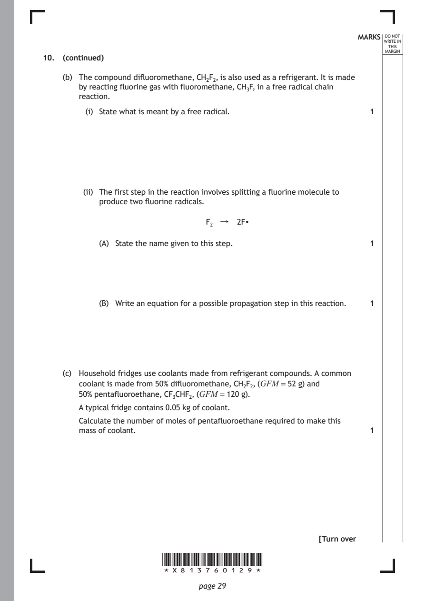
Selectable page text
MARKS _{W}^{D}_{R}^{O}_{I} _{T}^{N}OT
E IN
THIS
MARGIN
10. (continued)
(b) The compound difluoromethane, CH₂F₂, is also used as a refrigerant. It is made
by reacting fluorine gas with fluoromethane, CH₃F, in a free radical chain
reaction.
(i) State what is meant by a free radical. 1
(ii) The first step in the reaction involves splitting a fluorine molecule to
produce two fluorine radicals.
F₂ ↓ 2F•
(A) State the name given to this step. 1
(B) Write an equation for a possible propagation step in this reaction. 1
(c) Household fridges use coolants made from refrigerant compounds. A common
coolant is made from 50% difluoromethane, CH₂F₂, (GFM = 52 g) and
50% pentafluoroethane, CF₃CHF₂, (GFM = 120 g).
A typical fridge contains 0.05 kg of coolant.
Calculate the number of moles of pentafluoroethane required to make this
mass of coolant. 1
[Turn over
*X813760129*
page 29PDF page 30
Paper 2, Question 11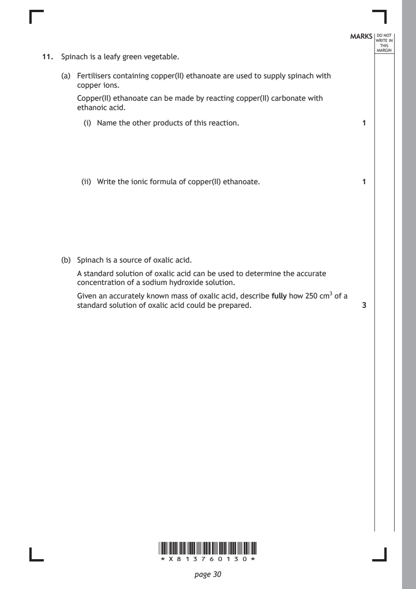
Selectable page text
MARKS _{W}^{D}_{R}^{O}_{I} _{T}^{N}OT
E IN
THIS
MARGIN
11. Spinach is a leafy green vegetable.
(a) Fertilisers containing copper(II) ethanoate are used to supply spinach with
copper ions.
Copper(II) ethanoate can be made by reacting copper(II) carbonate with
ethanoic acid.
(i) Name the other products of this reaction. 1
(ii) Write the ionic formula of copper(II) ethanoate. 1
(b) Spinach is a source of oxalic acid.
A standard solution of oxalic acid can be used to determine the accurate
concentration of a sodium hydroxide solution.
Given an accurately known mass of oxalic acid, describe fully how 250 cm³ of a
standard solution of oxalic acid could be prepared. 3
*X813760130*
page 30PDF page 31
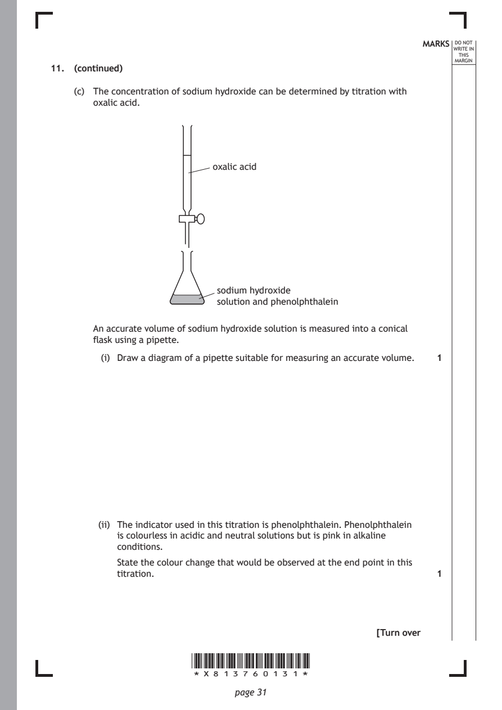
Selectable page text
MARKS _{W}^{D}_{R}^{O}_{I} _{T}^{N}OT
E IN
THIS
MARGIN
11. (continued)
(c) The concentration of sodium hydroxide can be determined by titration with
oxalic acid.
oxalic acid
sodium hydroxide
solution and phenolphthalein
An accurate volume of sodium hydroxide solution is measured into a conical
flask using a pipette.
(i) Draw a diagram of a pipette suitable for measuring an accurate volume. 1
(ii) The indicator used in this titration is phenolphthalein. Phenolphthalein
is colourless in acidic and neutral solutions but is pink in alkaline
conditions.
State the colour change that would be observed at the end point in this
titration. 1
[Turn over
*X813760131*
page 31PDF page 32
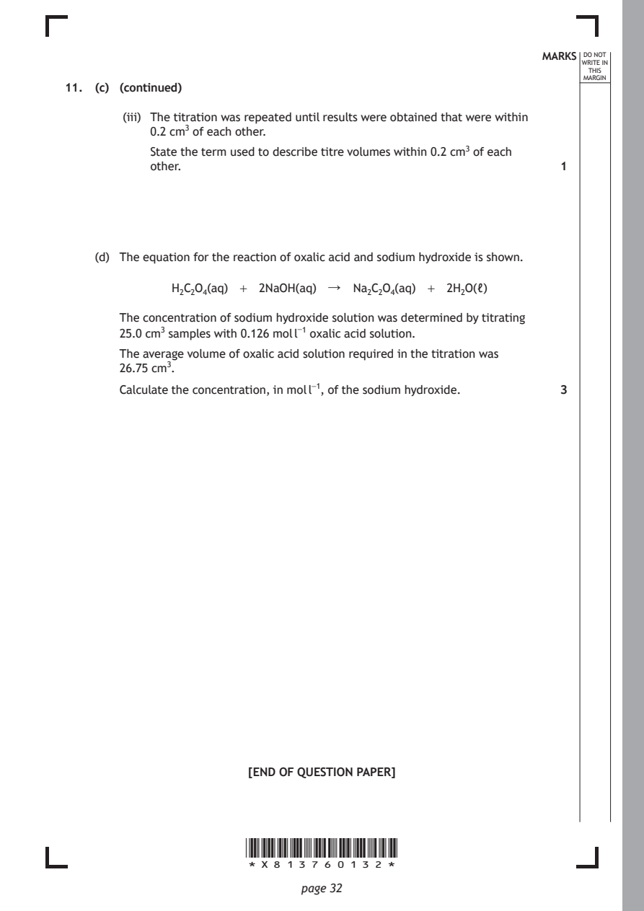
Selectable page text
MARKS _{W}^{D}_{R}^{O}_{I} _{T}^{N}OT
E IN
THIS
MARGIN
11. (c) (continued)
(iii) The titration was repeated until results were obtained that were within
0.2 cm³ of each other.
State the term used to describe titre volumes within 0.2 cm³ of each
other. 1
(d) The equation for the reaction of oxalic acid and sodium hydroxide is shown.
H₂C₂O₄(aq) + 2NaOH(aq) ↓ Na₂C₂O₄(aq) + 2H₂O(ℓ)
The concentration of sodium hydroxide solution was determined by titrating
25.0 cm³ samples with 0.126 mol l⁻¹ oxalic acid solution.
The average volume of oxalic acid solution required in the titration was
26.75 cm³.
Calculate the concentration, in mol l⁻¹, of the sodium hydroxide. 3
[END OF QUESTION PAPER]
*X813760132*
page 32PDF page 33
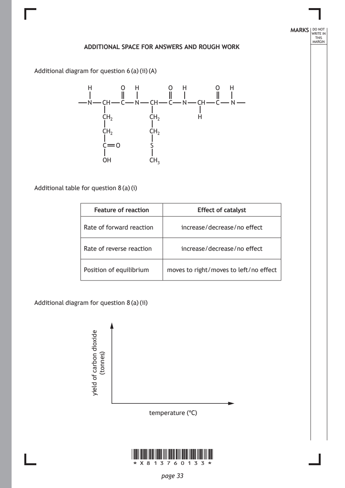
Selectable page text
MARKS _{W}^{D}_{R}^{O}_{I} _{T}^{N}OT
E IN
THIS
MARGIN
ADDITIONAL SPACE FOR ANSWERS AND ROUGH WORK
Additional diagram for question 6 (a) (ii) (A)
H O H O H O H
N CH C N CH C N CH C N
CH₂ CH₂ H
CH₂ CH₂
C O S
OH CH₃
Additional table for question 8 (a) (i)
Feature of reaction Effect of catalyst
Rate of forward reaction increase/decrease/no effect
Rate of reverse reaction increase/decrease/no effect
Position of equilibrium moves to right/moves to left/no effect
Additional diagram for question 8 (a) (ii)
*X813760133*
page 33
edixoid
nobrac
fo
dleiy
)sennot(
temperature (°C)PDF page 34
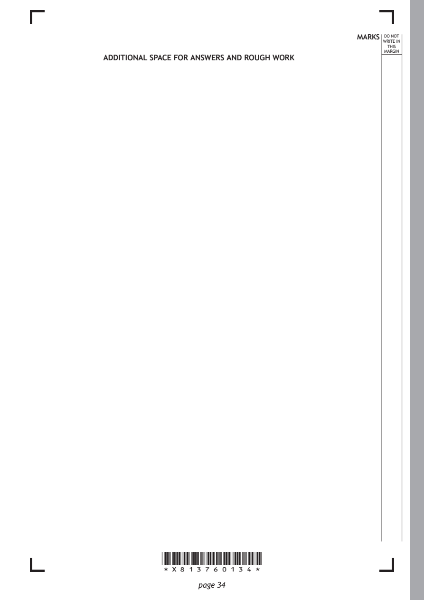
Selectable page text
MARKS _{W}^{D}_{R}^{O}_{I} _{T}^{N}OT
E IN
THIS
MARGIN
ADDITIONAL SPACE FOR ANSWERS AND ROUGH WORK
*X813760134*
page 34PDF page 35
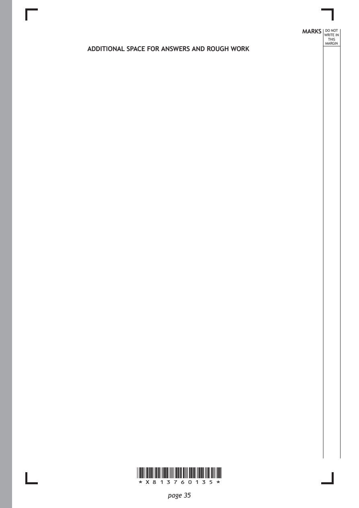
Selectable page text
MARKS _{W}^{D}_{R}^{O}_{I} _{T}^{N}OT
E IN
THIS
MARGIN
ADDITIONAL SPACE FOR ANSWERS AND ROUGH WORK
*X813760135*
page 35PDF page 36

Selectable page text
[BLANK PAGE]
DO NOT WRITE ON THIS PAGE
*X813760136*
page 36